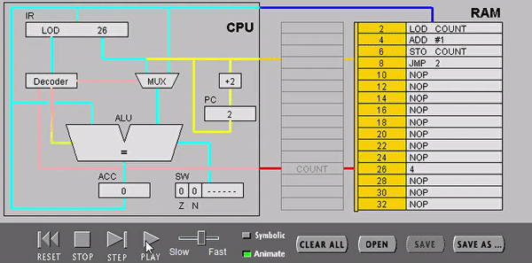

The CPU continuously repeats a fetch-decode-execute cycle , in order to execute the instructions in a program, one by one. In this cycle, the CPU goes through three main stages:
During the fetch stage of the cycle, the content of the memory cell addressed by the program counter is retrieved and placed into the Instruction Register (IR).

In the decode part of the cycle, the Control Unit works out what needs to be done by the instruction, and sends control signals to coordinate the other components.

During the execute stage of the cycle, the instruction is executed, using the ALU if necessary. Sometimes, this stage may involve the loading or saving of data from and to the main memory.
Then, the content of the PC is increased to point to the next instruction to be executed and a new fetch cycle starts again.